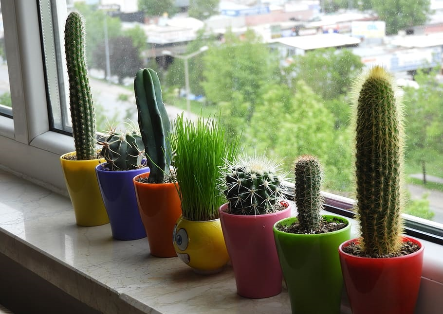

Ка́ктусовые (лат. Cactaceae) — семейство многолетних цветковых растений порядка Гвоздичноцветные, включает около 127 родов и около 1750 видов, обитающих преимущественно в засушливых областях, включая одну из самых сухих пустынь мира — пустыню Атакама.
Почти все кактусовые — сильно специализированные стеблевые суккуленты с редуцированными листьями, приспособившиеся к запасанию воды и её экономному расходованию. Разнообразие строения и размеров побегов, направления их роста и характер ветвления обусловило существование аналогов почти всех жизненных форм, а также специфических «кактусовидных» форм роста: однопобеговых шаровидных и колонновидных. Самые крупные кактусы достигают высоты почти 20 метров, а самые мелкие — представители рода Blossfeldia с шаровидными побегами около 1 см диаметра. У большинства суккулентных кактусовых достигается наименьшая величина испаряющей поверхности, приходящаяся на единицу объёма запасающих воду тканей. Листья у большинства кактусовых отсутствуют, и функцию фотосинтеза выполняет стебель. Побеги у подавляющего большинства видов многолетние, за исключением Opuntia chaffeyi и видов рода Pterocactus, часто отмирающих в конце вегетационного периода. Листорасположение у видов с развитыми листьями — спиральное. Характерной особенностью кактусовых являются видоизмененные пазушные почки — ареолы, в которых развиваются колючки, гомологичные почечным чешуям. Цветки у кактусовых чаще одиночные, у некоторых перескиевых — в соцветиях; в основном цветки и соцветия пазушные, у немногих видов — терминальные. У некоторых видов цветки развиваются на специализированных частях побегов — цефалиях. Цветки преимущественно обоеполые, актиноморфные или зигоморфные, почти всегда с хорошо развитой цветочной трубкой, со спиральным венчиковидным околоцветником, состоящим из многочисленных и неясно дифференцированных членов, из которых самые наружные часто зеленые. Тычинки многочисленные, что объясняется расщеплением первоначально меньшего их числа, прикрепленные спирально или группами к трубке околоцветника; пыльники вскрываются продольно. Пестик обычно длинный, с 3-20 лопастями рыльца. Завязь иногда ещё более или менее верхняя, но обычно нижняя, возникшая в результате обрастания её разросшимся цветоложем, что доказывается характерным изгибом и обратным ходом проводящих пучков, наличием на внешней поверхности ареол, случаями образования побегов на нижней завязи некоторых кактусовых. Семязачатки многочисленные, на длинных семяножках. Семена с прямым или чаще согнутым зародышем. Плоды очень разнообразны: ягодообразные ослизняющиеся или растрескивающиеся; высыхающие с выветривающейся стенкой или вскрывающиеся за счет неправильного разрыва стенки.